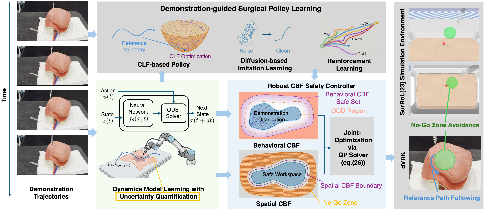
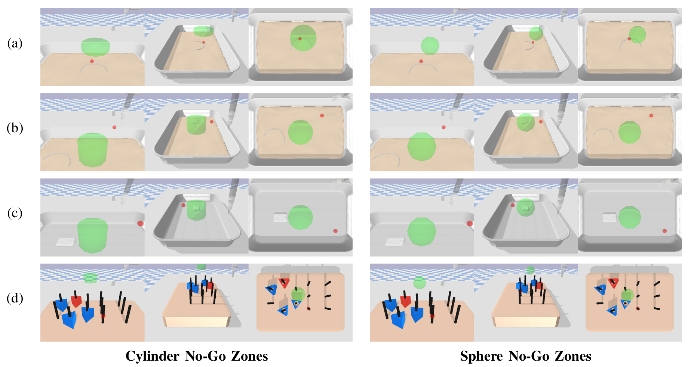
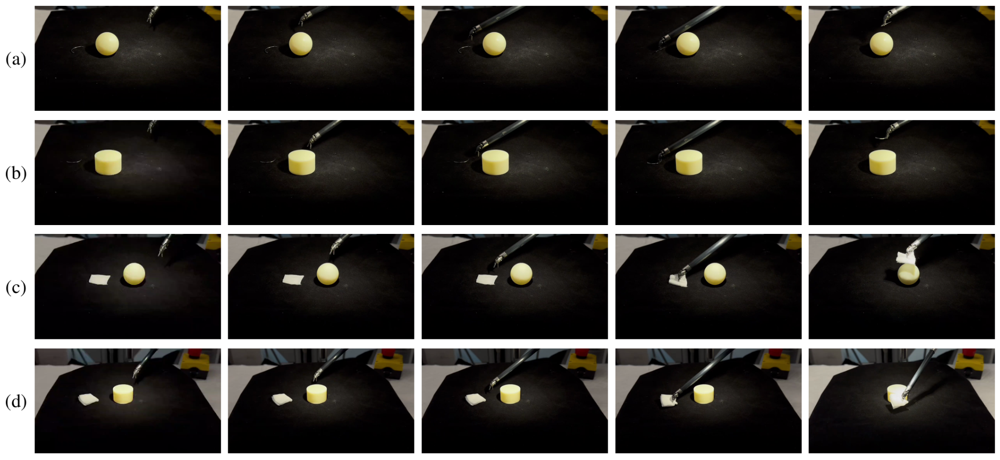
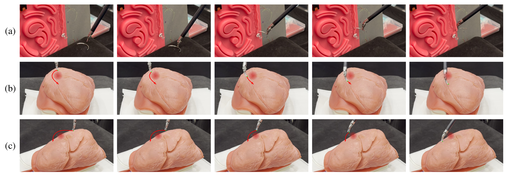
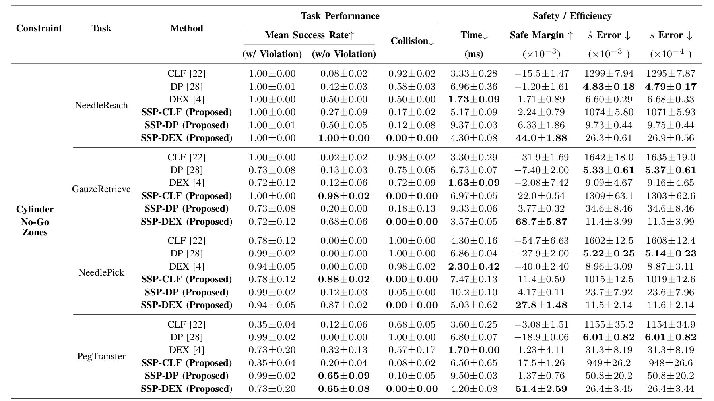
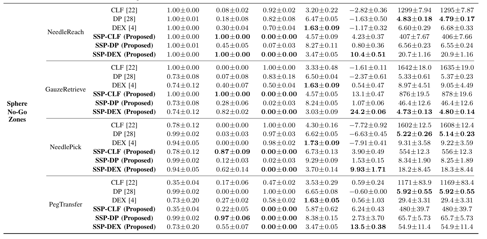

Abstract
The paradigm of robot-assisted surgery is shifting toward data-driven autonomy, where policies learned via Reinforcement Learning (RL) or Imitation Learning (IL) enable the execution of complex tasks. However, these "black-box" policies often lack formal safety guarantees, a critical requirement for clinical deployment. In this paper, we propose the Safety-guaranteed Surgical Policy (SSP) framework to bridge the gap between data-driven generality and formal safety. We utilize Neural Ordinary Differential Equations (Neural ODEs) to learn an uncertainty-aware dynamics model from demonstration data. This learned model underpins a robust Control Barrier Function (CBF) safety controller, which minimally alters the actions of a surgical policy to ensure strict safety under uncertainty. Our controller enforces two constraint categories: behavioral constraints (restricting the task space of the agent) and spatial constraints (defining surgical no-go zones). We instantiate the SSP framework with surgical policies derived from RL, IL and Control Lyapunov Functions (CLF). Validation on both the SurRoL simulation and da Vinci Research Kit (dVRK) demonstrates that our method achieves a near-zero constraint violation rate while maintaining high task success rates compared to unconstrained baselines.

SSP Framework Overview. The architecture decouples task performance from safety assurance by wrapping "black-box" surgical policies within a theoretically guaranteed safety layer. Neural ODEs learn a continuous dynamics model with uncertainty quantification, which underpins a Robust CBF controller that jointly optimizes behavioral and spatial constraints via a quadratic program.

Surgical Environments with Constraints in SurRoL. The rows correspond to the four tasks: (a) NeedleReach, (b) NeedlePick, (c) GauzeRetrieve, and (d) PegTransfer. The columns illustrate the two different no-go zone geometries (Cylinder vs. Sphere).

Real World Experiments — Needle and Gauze Picking with No-Go Zones. Sampled frames evaluating RL with safety constraints guaranteed by CBF. The rows show (a) needle pick with a sphere, (b) needle pick with a cylinder, (c) gauze retrieve with a sphere, and (d) gauze retrieve with a cylinder.

Real World Experiments on dVRK. (a) Multi-stage suturing sequence (RL + CLF): the task is decomposed into an RL-based grasp phase for robust needle acquisition, followed by a CLF-based insertion phase. (b) Lung tumor resection task with safety constraints (top and side views, CLF + CBF): the CBF enforces a hard safety constraint to prevent penetration into a spherical vascular safety region, smoothly deviating to avoid the no-go zone.

Main Results (1/2). Quantitative evaluation on SurRoL simulation tasks comparing SSP against unconstrained baselines. SSP achieves a near-zero constraint violation rate while maintaining high task success rates across NeedleReach, NeedlePick, GauzeRetrieve, and PegTransfer tasks.

Main Results (2/2). Additional quantitative evaluation across different constraint types and task configurations, demonstrating SSP's consistent safety guarantees under both behavioral and spatial constraints, and across sphere and cylinder no-go zone geometries.
Real-World Experiment Videos
Needle Pick with Sphere Obstacle. The RL policy picks a surgical needle while the CBF enforces strict safety constraints around a spherical no-go zone, demonstrating real-time obstacle avoidance on the dVRK.
Needle Pick with Cylinder Obstacle. The RL policy picks a surgical needle while the CBF enforces safety constraints around a cylindrical no-go zone, validating the framework under a different obstacle geometry.
Gauze Retrieve with Sphere Obstacle. The RL policy retrieves surgical gauze while the CBF ensures the robot arm avoids a spherical obstacle, maintaining high task success without constraint violations.
Gauze Retrieve with Cylinder Obstacle. The RL policy retrieves surgical gauze while the CBF guarantees avoidance of a cylindrical obstacle, further validating SSP's generalization across obstacle types.
Multi-Stage Suturing (RL + CLF). A complete suturing sequence on the dVRK where the task is decomposed into an RL-based grasp phase for robust needle acquisition, followed by a CLF-based insertion phase for precise needle driving.
Lung Tumor Resection — Top View (CLF + CBF, 5× speed). Top-down view of the mock lung tumor resection task. The CLF generates a nominal cutting trajectory while the CBF enforces a hard safety constraint preventing penetration into a spherical vascular safety region (r = 90 mm).
Lung Tumor Resection — Side View (CLF + CBF, 5× speed). Side-view of the same lung tumor resection task, showing the controller smoothly deviating from the nominal cutting path to avoid the vascular no-go zone and converging back after clearance.
BibTeX
@article{hu2026ssp,
title={SSP: Safety-guaranteed Surgical Policy via Joint Optimization of Behavioral and Spatial Constraints},
author={Jianshu Hu and Zhiyuan Guan and Lei Song and Kantaphat Leelakunwet and Hesheng Wang and Wei Xiao and Qi Dou and Yutong Ban},
journal={arXiv preprint arXiv:2603.07032},
year={2026}
}